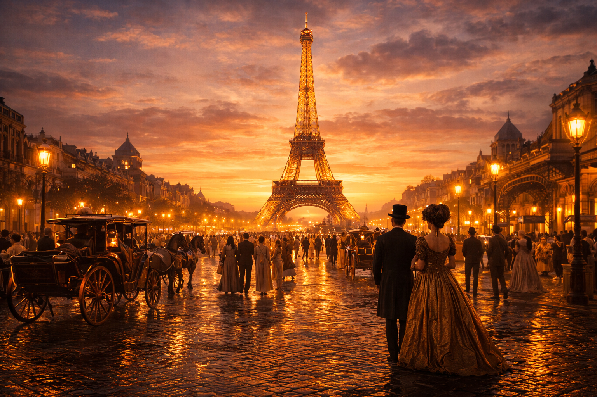
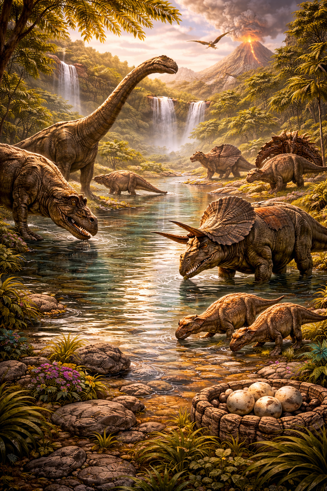
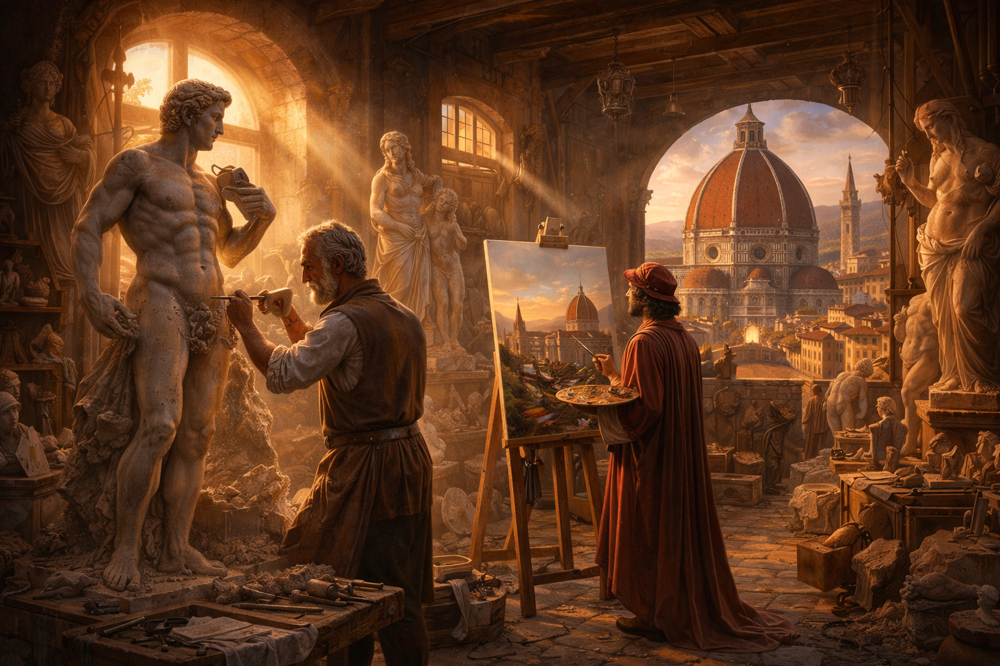

Voyagez à Paris 1889, au Crétacé ou à Florence 1504 grâce à notre technologie temporelle de luxe. Un guide IA personnalisé vous accompagne à chaque étape.
Découvrir les époquesTimeTravel Agency est une agence de voyage temporel de luxe, spécialisée dans les expériences historiques immersives. Nos voyages combinent confort moderne, sécurité absolue et une immersion totale dans les époques choisies.

Découvrez Paris lors de l’Exposition Universelle, avec la Tour Eiffel fraîchement inaugurée, les cafés littéraires de la fin du XIXᵉ siècle.
À partir de 1 200 €
Réserver ce voyage
Marchez parmi les paysages préhistoriques, découvrez la faune du Crétacé et vivez une aventure unique au cœur de la nature sauvage primordiale.
À partir de 2 500 €
Réserver ce voyage
Plongez dans l’âge d’or de l’art, avec Michel-Ange, Léonard de Vinci et la naissance du génie créatif Renaissance au cœur de la ville de Florence.
À partir de 1 800 €
Réserver ce voyageOui. Tous nos voyages utilisent un protocole temporel certifié, avec des flux stabilisateurs et une supervision 24h/24 par notre équipe technique.
Possible selon les forfaits “Premium” et “VIP”. Un supplément s’applique pour les ajustements temporels.
Les tarifs sont calculés en fonction de la rareté de l’événement, de la durée du séjour et de la complexité du retour dans notre ère.
Guide complet : code, design, JS avancé